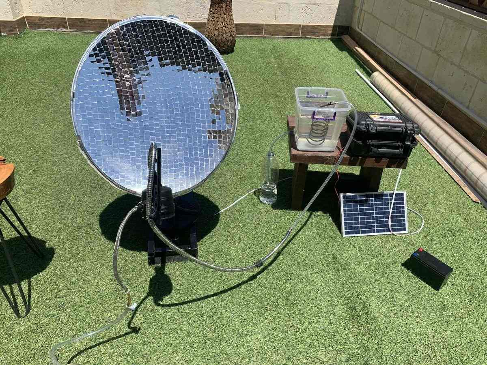
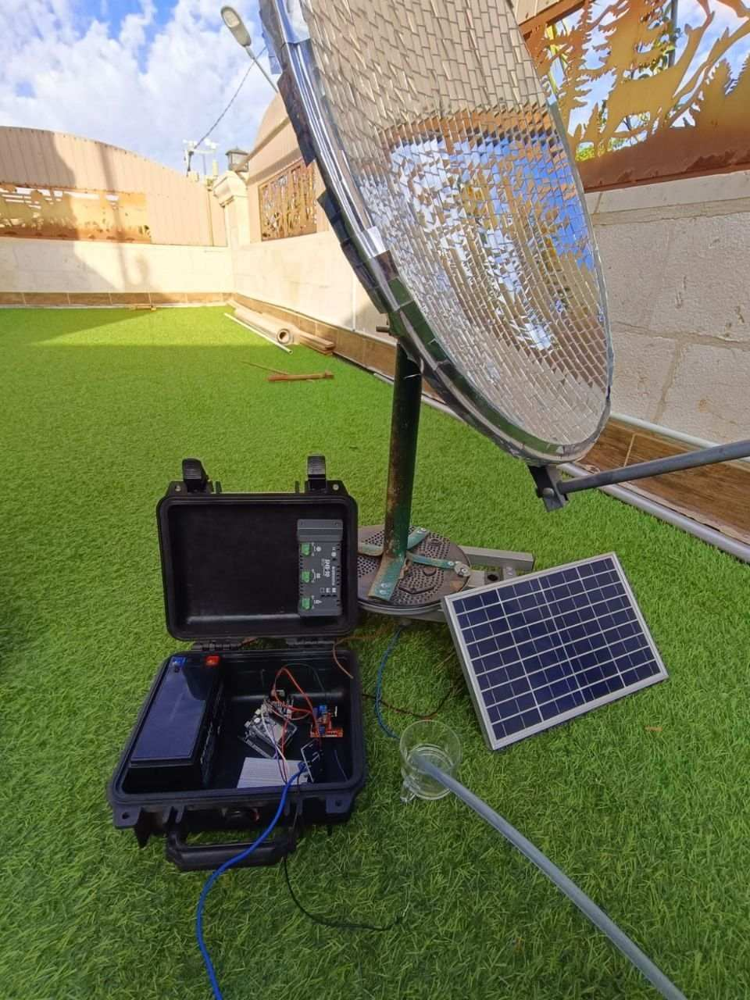

Skywell
A transportable water unit that produces drinking water two ways: solar distillation, and pulling it out of the air.

What it is
Skywell is built around a simple constraint: produce drinkable water where there is no clean supply and no grid, using something one person can move.
The first subsystem is a mirrored parabolic dish that tracks the sun, concentrating a beam onto a conduit carrying the source water. The water is heated to boiling and the vapour condensed — genuine distillation rather than pasteurisation, so it separates out dissolved salts and contaminants, not only pathogens. Tracking is what makes it work: a fixed dish loses its focus within minutes as the sun moves, so the mount follows it through the day to hold the concentration point on the conduit.
The second subsystem is an atmospheric water generator, condensing humidity out of the air with an air pump and a propane-driven cycle. It runs independently of the dish, which matters at night and on overcast days when the solar path produces nothing.
Both are coordinated by an ESP32 handling the tracking servos, sensing and the generator cycle. The two paths are deliberately independent — one produces from bad water and sunlight, the other from air and fuel, so the unit is not dependent on either being available.
Where it fits
Off-grid supply
Drinking water at sites with no mains and no reliable power.
Remote agriculture
Small-scale clean water for farms beyond the distribution network.
Emergency response
A transportable unit for situations where local supply is contaminated or cut.
Arid regions
An atmospheric path for places where there is humidity but no surface water.
Field camps
Survey, research and work camps that would otherwise truck water in.
Demonstration
A working platform for teaching solar concentration and condensation.
In motion
2 images
